第 3 可视化与建模技术
本章沿用教材的三条主线：先理解 ggplot2 的图层化语法，再按信息表达目的选择图形，最后把统计模型的结果整理成数据并进行批量建模。可视化和建模并不是两个孤立环节：图形帮助我们提出模型问题、诊断模型，而整洁的模型结果又可以继续进入数据管道和图形系统。
本章学习目标
完成本章后，你应当能够：
- 用“数据—映射—几何对象—标度—坐标系—分面—主题”解释一张
ggplot2图； - 区分美学映射与常量设置、全局映射与局部映射；
- 根据比较、关系、分布、时间、局部整体和空间等任务选择图形；
- 使用
showtext::showtext_auto()保证中文标题、坐标轴和标注能够稳定显示； - 用
broom::tidy()、glance()、augment()把模型输出变成整洁数据； - 用嵌套数据框与
purrr::map_*()完成分组批量建模； - 解释训练集、测试集、交叉验证和滚动回归的基本工作流。
解决图形中的中文字体
图形中的中文变成方框、空白或乱码，通常不是数据编码问题，而是绘图设备没有找到包含中文字形的字体。教材采用 showtext 与 sysfonts 解决这个问题：先注册中文字体，再调用 showtext_auto()，让之后打开的绘图设备自动使用 showtext 渲染文字。
本课程把跨平台检测封装在 R/chinese-font.R 中。它只使用计算机已有字体，不联网下载字体；在 macOS、Windows 和常见 Linux 环境中依次寻找 Arial Unicode、苹方、微软雅黑、黑体或 Noto Sans CJK 等字体。
Code
source("../R/chinese-font.R")
# 内部会注册字体并执行 showtext::showtext_auto(enable = TRUE)。
chinese_font <- setup_course_chinese_font(quiet = FALSE)
# 把字体写入全局主题，后续每张 ggplot 都能继承。
theme_set(theme_minimal(base_family = chinese_font))Code
ggplot(mpg, aes(displ, hwy, color = drv)) +
geom_point(alpha = 0.72, size = 2.2) +
annotate(
"label", x = 6.2, y = 39,
label = "中文标注可正常显示",
family = chinese_font, color = "#b04a3f"
) +
labs(
title = "发动机排量与高速燃油效率",
subtitle = "颜色表示驱动方式",
x = "发动机排量（升）",
y = "高速燃油效率（mpg）",
color = "驱动方式"
)
Figure 3.1: 使用 showtext 自动渲染中文标题、坐标轴与图内标注。
导出前检查：在屏幕中正常显示并不保证 PDF 一定正常。应当显式保存一次，再打开文件检查标题、图例、坐标轴和注释。推荐把图形对象传给
ggsave(plot = ...)，避免误存上一张图。
Code
p <- last_plot()
ggsave(
filename = "output/ch03-font-check.pdf",
plot = p,
width = 8, height = 5, units = "in",
device = cairo_pdf
)3.1 ggplot2 基础语法
3.1.1 ggplot2 概述
ggplot2 的关键不是“记住很多绘图函数”，而是用统一语法把图形逐层构造出来：选择整洁数据，把变量映射到图形属性，用几何对象表达数据，再按需要调整标度、坐标、分面、主题和输出。
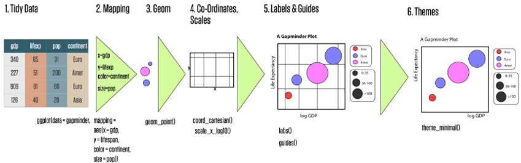
Figure 3.2: 教材图 3.1：从整洁数据、映射和几何对象逐步形成完整图形。
教材列出十个部件，其中数据、映射和几何对象是最基本的三项。
| 部件 | 课堂问题 | 常见函数 |
|---|---|---|
| 数据 data | 要画哪张整洁数据表？ | ggplot(data = ...) |
| 映射 mapping | 哪个变量控制位置、颜色、大小？ | aes() |
| 几何对象 geom | 用点、线、柱还是区域表达？ | geom_point()、geom_line() |
| 标度 scale | 数据值怎样变成刻度、颜色或大小？ | scale_*() |
| 统计变换 stat | 图层需要先计算频数、均值或拟合吗？ | stat_*() |
| 坐标系 coord | 图层怎样投影到画布？ | coord_*() |
| 位置调整 position | 重叠元素怎样堆叠、并排或抖动？ | position_*() |
| 分面 facet | 是否按类别拆成多张小图？ | facet_wrap()、facet_grid() |
| 主题 theme | 非数据元素怎样排版？ | theme_*()、theme() |
| 输出 output | 以什么尺寸和格式保存？ | ggsave() |
基本模板如下。加号表示“继续添加图层”，应放在上一行的末尾。
Code
ggplot(data = <DATA>, mapping = aes(<MAPPINGS>)) +
<GEOM_FUNCTION>(
mapping = aes(<LOCAL_MAPPINGS>),
stat = <STAT>,
position = <POSITION>
) +
<SCALE_FUNCTION> +
<COORDINATE_FUNCTION> +
<FACET_FUNCTION> +
<THEME_FUNCTION>3.1.2 数据、映射、几何对象
3.1.2.1 从空画布到可解释图形
Code
base_mpg <- ggplot(
data = mpg,
mapping = aes(x = displ, y = hwy)
)
base_mpg +
geom_point(aes(color = drv), alpha = 0.72) +
labs(
x = "发动机排量（升）",
y = "高速燃油效率（mpg）",
color = "驱动方式"
)
Figure 3.3: 数据提供变量，映射建立变量与图形属性的联系，几何对象真正绘制标记。
3.1.2.2 映射与设置不能混淆
aes(color = drv)是映射：颜色随变量drv改变，因此会自动生成图例；color = "#2d719b"是设置：所有点使用同一个常量颜色，不需要图例。
Code
p_map <- ggplot(mpg, aes(displ, hwy, color = drv)) +
geom_point() +
labs(title = "映射：随 drv 改变", color = "驱动方式")
p_set <- ggplot(mpg, aes(displ, hwy)) +
geom_point(color = "#2d719b") +
labs(title = "设置：所有点同色")
p_map | p_set
Figure 3.4: 左图把颜色映射到变量；右图把颜色设置为常量。
3.1.2.3 全局映射与局部映射
放在 ggplot() 中的映射会被后续图层继承；放在某个 geom_*() 中的映射只对该图层有效。
Code
p_group <- ggplot(mpg, aes(displ, hwy, color = drv)) +
geom_point(alpha = 0.55) +
geom_smooth(se = FALSE, linewidth = 0.8) +
labs(title = "全局 color：分组拟合", color = "驱动方式")
p_overall <- ggplot(mpg, aes(displ, hwy)) +
geom_point(aes(color = drv), alpha = 0.55) +
geom_smooth(se = FALSE, color = "#b04a3f", linewidth = 0.9) +
labs(title = "局部 color：整体拟合", color = "驱动方式")
p_group | p_overall
Figure 3.5: 左图的颜色映射被平滑线继承，因此分组拟合；右图只有散点分组，平滑线使用全体数据。
3.1.2.4 折线图需要明确分组
geom_line()必须知道哪些点属于同一条线。教材的 ecostats 示例中，每个地区是一组；若不写 group = Region，不同地区会被错误地串联。
Code
ecostats |>
ggplot(aes(Year, gdpPercap)) +
geom_line(aes(group = Region), alpha = 0.18, color = "#2d719b") +
geom_smooth(se = FALSE, linewidth = 1.1, color = "#d89512") +
labs(x = "年份", y = "人均 GDP", title = "地区轨迹与总体趋势")
Figure 3.6: 每个地区一条浅色折线，粗线表示所有地区的总体平滑趋势。
3.1.3 标度：控制坐标轴与图例
标度负责把数据空间转换到视觉空间。x、y标度生成坐标轴，color、fill、size等标度通常生成图例。
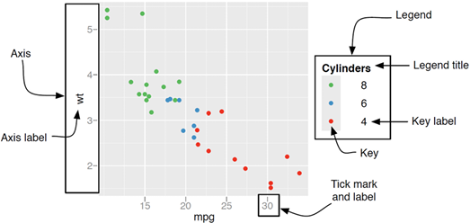
Figure 3.7: 教材图：坐标轴与图例都是标度的可视化结果。
Code
ggplot(mpg, aes(drv, fill = drv)) +
geom_bar(width = 0.68) +
scale_x_discrete(labels = c("4" = "四驱", "f" = "前驱", "r" = "后驱")) +
scale_fill_brewer(
palette = "Dark2",
labels = c("4" = "四驱", "f" = "前驱", "r" = "后驱")
) +
labs(x = "驱动方式", y = "车型数量", fill = "驱动方式")
Figure 3.8: 离散轴标签、连续轴刻度与图例名称都由标度或 labs 控制。
3.1.3.1 缩放视野与删除数据不同
coord_cartesian(xlim = ..., ylim = ...)像相机变焦，只改变显示范围；scale_x_continuous(limits = ...)会在统计变换前删除范围外的数据，可能改变拟合线、箱线图等统计结果。
Code
p_full <- ggplot(mpg, aes(displ, hwy)) +
geom_point(alpha = 0.45) +
geom_smooth(se = FALSE, color = "#b04a3f")
(p_full + coord_cartesian(xlim = c(4, 6), ylim = c(15, 35)) +
labs(title = "coord_cartesian：只缩放")) |
(p_full + scale_x_continuous(limits = c(4, 6)) +
labs(title = "scale limits：先删数据"))
Figure 3.9: 课堂推荐：只想放大局部时优先使用坐标系缩放。
3.1.3.2 对数标度用于跨度很大的变量
Code
gapminder |>
filter(year == max(year)) |>
ggplot(aes(gdpPercap, lifeExp, color = continent, size = pop)) +
geom_point(alpha = 0.68) +
scale_x_log10(labels = scales::label_dollar(scale_cut = scales::cut_short_scale())) +
scale_size(range = c(1.5, 8), guide = "none") +
labs(
x = "人均 GDP（对数标度）",
y = "预期寿命",
color = "洲",
title = "收入与预期寿命"
)
Figure 3.10: 对人均 GDP 使用对数标度后，不同数量级的国家更容易比较。
3.1.3.3 标题、图例与文字标注
Code
best_in_class <- mpg |>
group_by(class) |>
slice_max(hwy, n = 1, with_ties = FALSE) |>
ungroup()
ggplot(mpg, aes(displ, hwy)) +
geom_point(aes(color = class), alpha = 0.38) +
geom_label(
data = best_in_class,
aes(label = model),
family = chinese_font,
size = 2.7,
check_overlap = TRUE,
show.legend = FALSE
) +
labs(
title = "各车型中高速燃油效率最高的汽车",
subtitle = "复杂标注可选用 ggrepel::geom_label_repel()",
x = "发动机排量（升）",
y = "高速燃油效率（mpg）",
color = "车型"
)
Figure 3.11: 先准备需要标记的数据，再把 label 映射到相应变量。
3.1.4 统计变换、坐标系与位置调整
geom_bar()默认先统计频数，geom_histogram()先分箱，geom_boxplot()先计算分位数；这说明图形常常不是“直接画原始值”，而是先执行统计变换。
Code
ggplot(mpg, aes(class, hwy)) +
geom_violin(trim = FALSE, fill = "#b9ded8", color = "#168f84") +
stat_summary(
fun = mean,
fun.min = \(x) mean(x) - sd(x),
fun.max = \(x) mean(x) + sd(x),
geom = "pointrange",
color = "#b04a3f"
) +
labs(x = "车型", y = "高速燃油效率（mpg）")
Figure 3.12: 小提琴图展示分布形状，红色点区间表示均值加减一个标准差。
Code
p_flip <- ggplot(mpg, aes(class, hwy)) +
geom_boxplot(fill = "#b9ded8") +
coord_flip() +
labs(title = "coord_flip：水平比较")
p_dodge <- ggplot(mpg, aes(class, fill = drv)) +
geom_bar(position = "dodge") +
labs(title = "position_dodge：并排比较", fill = "驱动")
p_flip | p_dodge
Figure 3.13: 翻转坐标与并排柱形解决不同的表达问题。
3.1.5 分面、主题与输出
分面是在同一套标度和图形语法下，把数据按类别拆成小图。与把多张互不相关的图拼在一起不同，分面强调可比较性。
Code
ggplot(mpg, aes(displ, hwy)) +
geom_point(color = "#2d719b", alpha = 0.62) +
geom_smooth(se = FALSE, color = "#d89512", linewidth = 0.8) +
facet_wrap(vars(drv), nrow = 1) +
labs(x = "发动机排量（升）", y = "高速燃油效率（mpg）")
Figure 3.14: 按驱动方式分面后，可以比较各组内部的排量—燃油效率关系。
主题只控制标题、字体、网格、图例背景等非数据元素，不应改变数据含义。课堂中推荐先选择完整主题，再用 theme()做少量局部调整。
Code
# 第一步：先用数据、映射和几何对象完成图形主体。
p_theme <- ggplot(mpg, aes(displ, hwy, color = drv)) +
geom_point() +
labs(
title = "主题只改变非数据元素",
x = "发动机排量（升）",
y = "高速燃油效率（mpg）",
color = "驱动方式"
) +
# 第二步：选择一个完整主题，并指定支持中文的字体。
theme_bw(base_family = chinese_font) +
# 第三步：只对确有必要的元素做局部修改。
theme(legend.position = "top")
# 在保存之前先打印对象，检查标题、坐标轴、图例与中文字体。
p_theme
Figure 3.15: 完整主题提供整体样式，局部主题设置再调整图例与网格。
Code
# PNG 用于网页和一般文档；300 dpi 适合印刷。
ggsave(
"output/mpg.png", plot = p_theme,
width = 8, height = 5, units = "in", dpi = 300
)
# PDF 是矢量格式；cairo_pdf 能更稳定地处理中文字体。
ggsave(
"output/mpg.pdf", plot = p_theme,
width = 8, height = 5, device = cairo_pdf
)3.2 ggplot2 图形示例
教材按照图形要回答的问题，把常见可视化分为类别比较、数据关系、数据分布、时间序列、局部与整体、地理空间和动态交互七类。选图时不要先问“哪个图最漂亮”，而应依次确认：
- 要比较、解释或寻找的关系是什么？
- 变量是连续型、类别型、时间型还是空间对象？
- 读者最需要看见的是位置、长度、方向、面积还是颜色差异？
- 静态图是否已经足够；交互和动画是否真正增加信息？
3.2.1 类别比较：条形图与热图
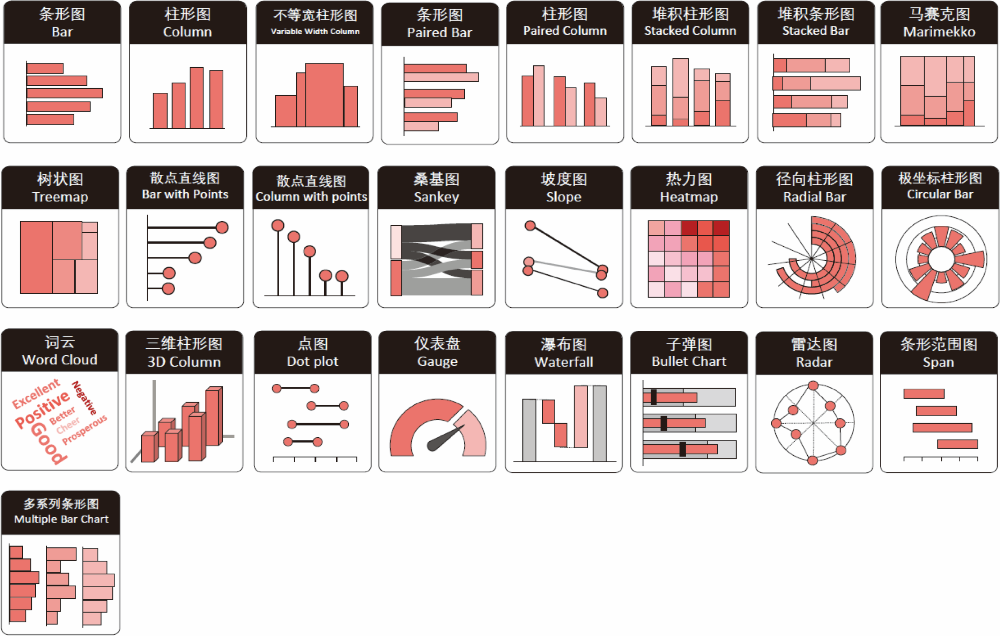
Figure 3.16: 教材中的类别比较图形：点图、棒棒糖图、坡度图、哑铃图和热图等。
类别较少时，条形图和点图通常最容易比较；类别形成二维组合时，热图能把频数映射到颜色。下面先用 count()得到车型与驱动方式的交叉频数，再用 geom_tile()绘制。
Code
heat_df <- mpg |>
count(class, drv, name = "车型数", .drop = FALSE)
ggplot(heat_df, aes(drv, class, fill = 车型数)) +
geom_tile(color = "white", linewidth = 0.7) +
geom_text(aes(label = 车型数), family = chinese_font, size = 3.4) +
scale_fill_gradient(low = "#e7f3f1", high = "#11796f") +
labs(x = "驱动方式", y = "车型", fill = "车型数", title = "二维类别比较") +
theme(panel.grid = element_blank())
Figure 3.17: 车型与驱动方式的组合频数；深色表示该组合中的车型更多。
不要用条形图表示原始连续值：若数据表中的每一行就是一个观测值，应先明确需要统计频数、求和还是求均值，再决定使用
geom_bar()或geom_col()。
3.2.2 数据关系：散点图与网络图
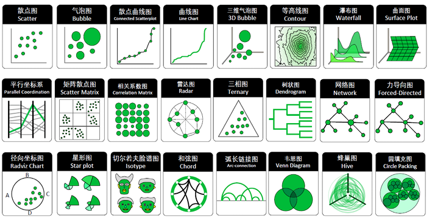
Figure 3.18: 教材中的关系图形：散点图、气泡图、相关矩阵、平行坐标和网络图。
两个连续变量的关系首先考虑散点图；第三个变量可以映射到颜色或大小，但同时加入过多通道会增加阅读负担。关系数据若由“节点表 + 边表”组成，则适合网络图。
Code
ggplot(mpg, aes(displ, hwy, color = drv)) +
geom_point(alpha = 0.52) +
geom_smooth(method = "lm", se = FALSE, linewidth = 0.8) +
labs(
x = "发动机排量（升）", y = "高速燃油效率（mpg）",
color = "驱动方式", title = "排量越大，燃油效率通常越低"
)
Figure 3.19: 颜色显示驱动方式，平滑线显示各组的整体趋势。
教材的通话网络示例由节点表和边表组成。即使没有安装网络图扩展包，也可以先用 ggplot2绘制可检查的静态结果：圆点大小表示节点权重，连线粗细表示关系权重。
Code
load("../data/ch03/phone_call.rda")
# 第一步：把 16 个节点均匀放在单位圆上，得到绘图坐标。
network_nodes <- nodes |>
mutate(
angle = 2 * pi * (row_number() - 1) / n(),
x = cos(angle),
y = sin(angle)
)
# 第二步：把起点和终点的坐标分别连接到边表。
network_edges <- edges |>
left_join(
network_nodes |> select(from = id, x, y),
by = "from"
) |>
left_join(
network_nodes |> select(to = id, xend = x, yend = y),
by = "to"
)
# 第三步：先画边，再画节点和标签，避免连线遮住文字。
ggplot() +
geom_segment(
data = network_edges,
aes(x, y, xend = xend, yend = yend, linewidth = value),
color = "#9cb4c1", alpha = 0.75
) +
geom_point(
data = network_nodes,
aes(x, y, size = value),
color = "#11796f", fill = "#b9ded8", shape = 21
) +
geom_text(
data = network_nodes,
aes(x, y, label = label),
family = chinese_font, size = 2.8, nudge_y = 0.09
) +
scale_linewidth(range = c(0.3, 2.2), guide = "none") +
scale_size(range = c(3, 10), guide = "none") +
coord_equal(clip = "off") +
labs(title = "节点表 + 边表 → 网络图") +
theme_void(base_family = chinese_font) +
theme(plot.margin = margin(20, 36, 20, 36))
Figure 3.20: 教材通话关系数据的静态网络图；节点大小和连线粗细分别表示节点、关系权重。
安装 visNetwork后，同一份节点表与边表可以直接转换成可缩放、可选择节点的交互网络：
Code
# nodes 描述实体及其权重，edges 描述起点、终点和关系权重。
visNetwork::visNetwork(nodes, edges) |>
visNetwork::visOptions(
highlightNearest = TRUE, # 选中节点时突出显示相邻关系
nodesIdSelection = TRUE # 增加节点下拉选择器
)3.2.3 数据分布：直方图、箱线图与人口金字塔
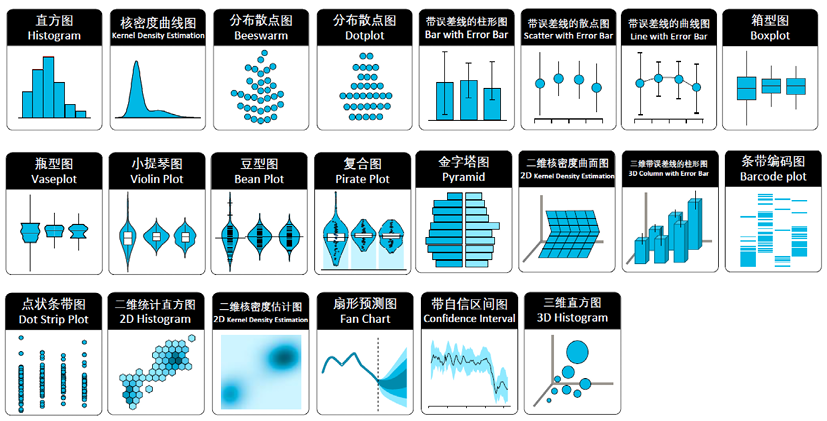
Figure 3.21: 教材中的分布图形：直方图、密度图、箱线图、小提琴图和人口金字塔。
人口金字塔本质上是“左右镜像的条形图”：把男性人口改为负值，通过 coord_flip()让年龄组纵向排列，再用绝对值恢复坐标轴标签。
Code
population_long <- read_csv(
"../data/ch03/hljPops.csv",
show_col_types = FALSE
) |>
pivot_longer(c(男, 女), names_to = "性别", values_to = "人口") |>
mutate(绘图人口 = if_else(性别 == "男", -人口, 人口))
ggplot(population_long, aes(Age, 绘图人口, fill = 性别)) +
geom_col(width = 0.86) +
coord_flip() +
scale_y_continuous(labels = function(x) abs(x)) +
scale_fill_manual(values = c("男" = "#2d719b", "女" = "#d86d8c")) +
labs(x = "年龄组", y = "人口", fill = "性别", title = "人口金字塔")
Figure 3.22: 黑龙江省分年龄与性别人口金字塔；横轴标签显示绝对值。
3.2.4 时间序列：折线图与面积图
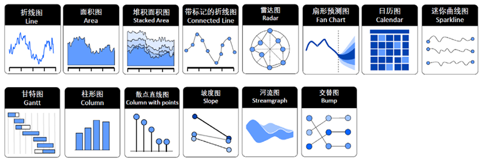
Figure 3.23: 教材中的时间序列图形：折线图、面积图、日历热图、时间线和极坐标时间图。
时间应放在横轴并保持先后顺序。折线图适合看变化方向；面积图更强调总量，但基线会放大视觉差异，不适合精确比较多条序列。
Code
economics_recent <- economics |>
filter(date >= as.Date("2000-01-01"))
p_line <- ggplot(economics_recent, aes(date, unemploy / 1000)) +
geom_line(color = "#2d719b", linewidth = 0.8) +
labs(title = "折线：突出变化方向", x = NULL, y = "失业人数（百万）")
p_area <- ggplot(economics_recent, aes(date, unemploy / 1000)) +
geom_area(fill = "#76b7b2", alpha = 0.72) +
labs(title = "面积：突出总量", x = NULL, y = "失业人数（百万）")
p_line / p_area
Figure 3.24: 同一失业人数序列的折线表达与面积表达。
3.2.5 局部与整体：饼图还是排序条形图
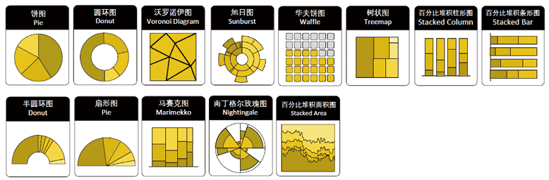
Figure 3.25: 教材中的局部—整体图形：饼图、环图、华夫图、树图和旭日图。
饼图利用角度和面积表达占比，适合类别很少、差异很大并且只需粗略判断的场景。若要准确比较，按占比排序的条形图通常更有效。
Code
class_share <- mpg |>
count(class, name = "车型数") |>
mutate(占比 = 车型数 / sum(车型数)) |>
arrange(desc(占比)) |>
mutate(class = forcats::fct_reorder(class, 占比))
p_pie <- ggplot(class_share, aes(x = "", y = 占比, fill = class)) +
geom_col(width = 1, color = "white") +
coord_polar(theta = "y") +
labs(title = "饼图：看构成", fill = "车型") +
theme_void(base_family = chinese_font)
p_bar <- ggplot(class_share, aes(占比, class, fill = class)) +
geom_col(show.legend = FALSE) +
scale_x_continuous(labels = scales::label_percent()) +
labs(title = "排序条形图：做比较", x = "占比", y = NULL)
p_pie | p_bar
Figure 3.26: 同一份车型占比：饼图强调构成，排序条形图便于精确比较。
3.2.6 地理空间图
地理空间图是在地图上展示数据关系，即与地理位置信息联系起来绘图，地理位置通常是用经度、纬度表示。常见的地理空间图包括普通地图、等值区间地图、等位图、带散点/气泡/条形/饼图/链接线的地图、流量地图、向量地图、道林地图等。
现在的 GIS 类软件广泛使用简单要素（Simple Features）标准，主要是用二维几何图形对象（点、线、多边形、点族、线族、多边形族等）表示地理矢量数据，还可以包含坐标参照系统和用于描述对象的属性（如名称、值、颜色等）。
sf 包实现了将简单要素表示成 R 中的 data.frame，并提供了一系列处理此类数据的工具。在 sf 格式数据框中，属性要素是正常的列，几何要素（geometry）存放为列表列。
geometry 列是最重要的列，它指定了每个地理区域的空间几何，每个元素都是一个多边形族，即包含一个或多个多边形的顶点的数据，它们能确定多边形区域的边界。
有了 sf 格式的数据，就可以用 geom_sf() 和 coord_sf() 函数绘制地图，甚至无须设定任何参数和美学映射。
3.2.7 动态交互图
plotly 包能够在 ggplot2 的基础上生成动态可交互图形。只要对 ggplot2 绘制的图形对象嵌套 ggplotly()，图形就会变成可交互状态；鼠标移动到图形元素上时，会自动显示对应数值。
Code
# 加载 plotly，使用 ggplotly() 将 ggplot 图转换为交互图。
library(plotly)
# 教材数据已经在本章开头载入为 ecostats。
# 根据省级地区名称，将观测划分为东北、华北、华中、华南、
# 西北、西南和华东七个区域。
ecostats <- ecostats |>
mutate(
Area = case_when(
Region %in% c("黑龙江", "吉林", "辽宁") ~ "东北",
Region %in% c("北京", "天津", "河北", "山西", "内蒙古") ~ "华北",
Region %in% c("河南", "湖北", "湖南") ~ "华中",
Region %in% c("广东", "广西", "海南") ~ "华南",
Region %in% c("陕西", "甘肃", "宁夏", "青海", "新疆") ~ "西北",
Region %in% c("四川", "贵州", "云南", "重庆", "西藏") ~ "西南",
TRUE ~ "华东"
)
)
# 只保留 2017 年数据；横轴表示消费水平，纵轴表示投资，
# 点的颜色表示所属区域。
p <- ecostats |>
filter(Year == 2017) |>
ggplot(aes(Consumption, Investment, color = Area)) +
geom_point() +
theme_bw()
# 把静态 ggplot 对象 p 转换为可缩放、可悬停查看数值的交互图。
ggplotly(p)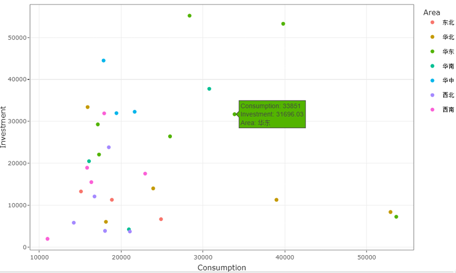
Figure 3.27: 教材图 3.47：用 plotly 绘制动态可交互图形。
gganimate 包是基于 ggplot2 的动态可视化扩展包，能让图形元素随时间等逐帧变化，所生成的动态图可以导出为 .gif 格式。教材用下面的代码绘制动态散点图，反映不同地区投资与消费水平随年份的变化。
Code
# 加载 gganimate，为 ggplot2 图形增加逐帧动画。
library(gganimate)
# 横轴表示消费水平，纵轴表示投资；圆点大小表示人口。
ggplot(ecostats, aes(Consumption, Investment, size = Population)) +
geom_point() +
# 再把区域映射到颜色，使七个区域能够区分。
geom_point(aes(color = Area)) +
# 消费水平跨度较大，因此把横轴转换为以 10 为底的对数标度。
scale_x_log10() +
# frame_time 会在每一帧标题中显示当前年份。
labs(title = "年份: {frame_time}", x = "消费水平", y = "投资") +
# 以 Year 作为时间变量，让圆点随年份逐帧移动。
transition_time(Year)
# 将上面生成的动画保存为 GIF 文件。
anim_save("output/ecostats.gif")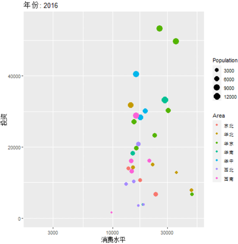
Figure 3.28: 教材图 3.48：用 gganimate 绘制动态可视化图形。
3.3 统计建模技术
本节不追求罗列模型，而是建立“模型也是数据分析管道中的对象”这一观念：准备数据、拟合模型、整理输出、评估误差、批量执行，最后再把结果画出来。
3.3.1 用 broom 整理模型结果
基础 R 的模型摘要适合阅读，却不便继续计算。broom提供三个互补函数：
| 函数 | 一行代表什么 | 典型用途 |
|---|---|---|
tidy() |
一个模型项或系数 | 提取估计值、标准误、置信区间和 p 值 |
glance() |
一个模型 | 提取拟合优度、样本量、AIC 等总体指标 |
augment() |
一个原始观测 | 把拟合值、残差等附回数据 |
Code
mt_model <- lm(mpg ~ wt, data = mtcars)
# 每个系数一行，并计算 95% 置信区间。
tidy(mt_model, conf.int = TRUE)Code
# 整个模型一行，选择课堂常用的评价指标。
glance(mt_model) |>
select(r.squared, adj.r.squared, sigma, AIC, nobs)Code
mt_augmented <- augment(mt_model, data = mtcars)
p_fit <- ggplot(mt_augmented, aes(wt, mpg)) +
geom_point(color = "#2d719b") +
geom_line(aes(y = .fitted), color = "#b04a3f", linewidth = 0.9) +
labs(title = "拟合关系", x = "车重", y = "燃油效率")
p_resid <- ggplot(mt_augmented, aes(.fitted, .resid)) +
geom_hline(yintercept = 0, color = "grey55") +
geom_point(color = "#d89512") +
labs(title = "残差诊断", x = "拟合值", y = "残差")
p_fit | p_resid
Figure 3.29: augment() 让拟合值和残差重新成为可视化的数据列。
3.3.2 用 modelr 划分数据并评估模型
训练集用于估计模型参数，测试集用于模拟模型遇到新数据时的表现。必须先划分数据，再拟合模型；如果先看测试集再调整模型，测试误差就会变得过于乐观。
Code
set.seed(20230824)
# 约 80% 用于训练，其余用于测试。
split_mpg <- resample_partition(mtcars, c(train = 0.8, test = 0.2))
train_data <- as_tibble(split_mpg$train)
test_data <- as_tibble(split_mpg$test)
train_model <- lm(mpg ~ wt + hp, data = train_data)
# modelr 的指标函数需要模型与待评价数据。
tibble(
指标 = c("RMSE", "MAE", "R²"),
数值 = c(
rmse(train_model, test_data),
mae(train_model, test_data),
rsquare(train_model, test_data)
)
)单次划分受随机性影响。K 折交叉验证把数据分成 K 份，轮流把其中一份作为验证集，其余作为训练集，最后汇总 K 次评估结果。
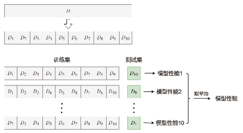
Figure 3.30: 教材图：10 折交叉验证，每一轮使用不同的一折作为测试数据。
Code
set.seed(20230824)
cv10 <- crossv_kfold(mtcars, k = 10)
cv_result <- cv10 |>
mutate(
model = map(train, function(split) lm(mpg ~ wt + hp, data = split)),
rmse = map2_dbl(model, test, rmse)
)
cv_result |>
summarise(
平均RMSE = mean(rmse),
标准差 = sd(rmse),
最小值 = min(rmse),
最大值 = max(rmse)
)
modelr很好地展示了建模思想；在更完整的现代工作流中，可以继续学习rsample、parsnip、recipes和yardstick组成的 tidymodels 生态。
3.3.3 分组嵌套与批量建模
批量建模的关键是让“每组数据”成为列表列中的一个元素，再用 map()对每个元素执行同一个建模函数。这样可以避免复制粘贴几十次 lm()。
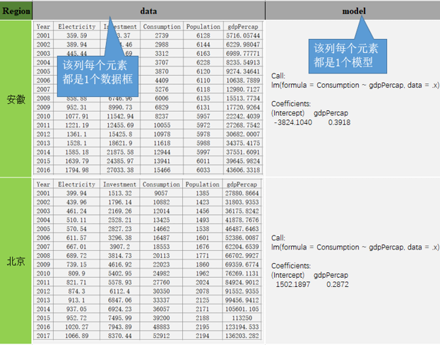
Figure 3.31: 教材图：嵌套数据框把每个组的数据框保存在列表列中，再附加模型和整理结果。
Code
region_models <- ecostats |>
group_nest(Region) |>
mutate(
# 对每个地区拟合同一公式。
model = map(data, function(df) lm(Consumption ~ gdpPercap, data = df)),
# 每个模型的系数表仍是一个小数据框。
coefficients = map(model, function(fit) tidy(fit, conf.int = TRUE)),
fit_stats = map(model, glance)
)
region_slopes <- region_models |>
select(Region, coefficients) |>
unnest(coefficients) |>
filter(term == "gdpPercap") |>
arrange(estimate)
region_slopes |>
select(Region, estimate, conf.low, conf.high) |>
slice_head(n = 6)Code
ggplot(
region_slopes,
aes(estimate, forcats::fct_reorder(Region, estimate))
) +
geom_vline(xintercept = 0, color = "grey65") +
geom_errorbar(
aes(xmin = conf.low, xmax = conf.high),
orientation = "y", width = 0.22, color = "#76b7b2"
) +
geom_point(color = "#b04a3f", size = 2) +
labs(x = "人均 GDP 系数", y = "地区", title = "同一模型公式在不同地区的结果")
Figure 3.32: 各地区消费—人均 GDP 回归斜率及其 95% 置信区间。
nest_by()也能建立“每组一行”的数据框，并与 rowwise()语义配合。它适合逐行调用返回单个对象的函数；若要同时生成多个整洁结果，group_nest() + map()通常更直观。
Code
ecostats |>
nest_by(Region) |>
mutate(model = list(lm(Consumption ~ gdpPercap, data = data))) |>
summarise(tidy(model), .groups = "drop")3.3.4 滚动回归：让模型随时间移动
滚动分析把一个固定宽度的时间窗口沿序列移动，每个位置拟合一次模型。它能显示局部关系怎样变化，但窗口越短，估计越不稳定；窗口越长，局部变化越容易被平滑掉。
Code
stocks_wide <- stocks |>
pivot_wider(names_from = Stock, values_from = Close) |>
arrange(Date)
stocks |>
ggplot(aes(Date, Close, color = Stock)) +
geom_line(linewidth = 0.7) +
labs(x = NULL, y = "收盘价", color = "股票", title = "两只股票的价格序列")
Figure 3.33: Amazon 与 Google 的日收盘价；先把长数据转换为每只股票一列。
教材使用滑动窗口函数。为了让结果不依赖可选包，下面先用行号明确构造 5 个交易日窗口，再计算 Amazon ~ Google的滚动斜率。序列首尾没有完整窗口，因此保留为 NA。
Code
# 每个中心位置 i 对应 i-2 至 i+2，共 5 个交易日。
window_centers <- seq_len(nrow(stocks_wide))
rolling_slope <- stocks_wide |>
mutate(
slope = map_dbl(
window_centers,
function(i) {
# 首尾不足 5 天时不拟合，避免不同窗口宽度混在一起。
if (i < 3 || i > nrow(stocks_wide) - 2) {
return(NA_real_)
}
window_data <- stocks_wide[(i - 2):(i + 2), ]
fit <- lm(Amazon ~ Google, data = window_data)
# 只提取 Google 的回归系数，形成可直接绘图的数值列。
unname(coef(fit)[["Google"]])
}
)
)
# 输出检查：中间日期应有斜率，首尾两行应为 NA。
rolling_slope |>
select(Date, Amazon, Google, slope) |>
slice(c(1:3, (nrow(rolling_slope) - 2):nrow(rolling_slope)))Code
# 把每个窗口的局部关系画成随时间变化的系数曲线。
ggplot(rolling_slope, aes(Date, slope)) +
geom_hline(yintercept = 0, color = "grey65") +
geom_line(color = "#2d719b") +
labs(x = NULL, y = "Google 的滚动系数", title = "局部关系会随时间变化")
Figure 3.34: 5 个交易日窗口中的滚动回归斜率；首尾缺少完整窗口，因此不连线。
如果已经安装 slider，同一算法可以更简洁地表达为“把建模函数滑过整张数据表”：
Code
rolling_fit <- slider::slide(
stocks_wide,
.f = function(window) lm(Amazon ~ Google, data = window),
.before = 2, # 当前日期之前取 2 天
.after = 2, # 当前日期之后取 2 天
.complete = TRUE # 只有完整的 5 天窗口才拟合
)3.4 综合练习：从图形问题走向模型问题
- 使用
mpg比较三种驱动方式的hwy分布。先画箱线图，再叠加抖动点，并解释为什么要使用透明度。 - 在
gapminder中选取 2007 年数据，画出人均 GDP 与预期寿命的关系。分别使用普通横轴和对数横轴，比较结论是否改变。 - 用
economics画失业率uempmed的时间序列，在图中标出最大值所在日期。 - 对
mtcars模型mpg ~ wt + hp运行 5 折交叉验证。更换随机种子后，平均 RMSE 发生了多大变化？ - 用
ecostats按地区拟合Investment ~ gdpPercap，整理每个地区的斜率与调整后 R²，并画出排序点图。 - 自选一张本章图形，同时导出 PNG 与 PDF。检查中文标题、图例、坐标轴和标注是否完整，并记录所用字体。